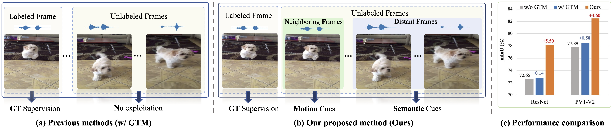
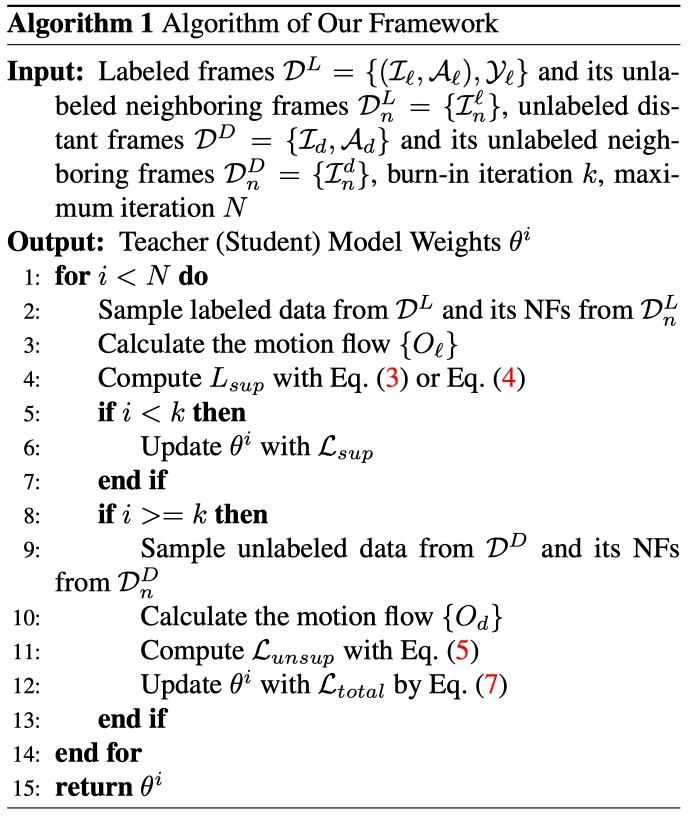
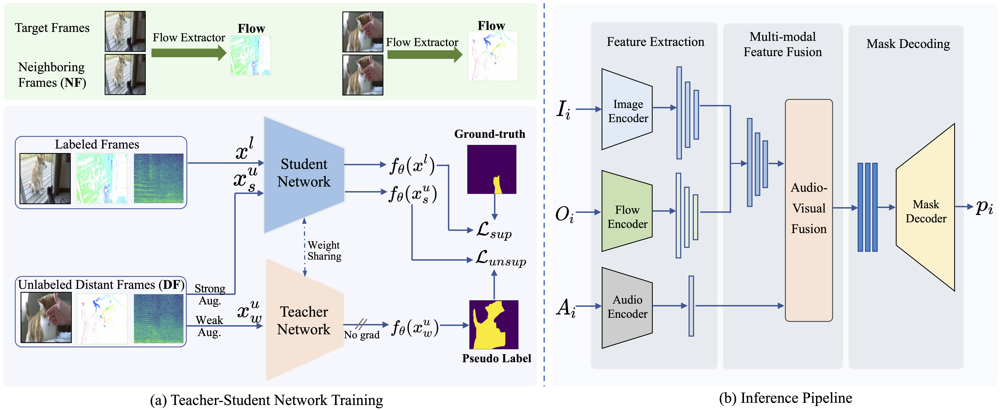
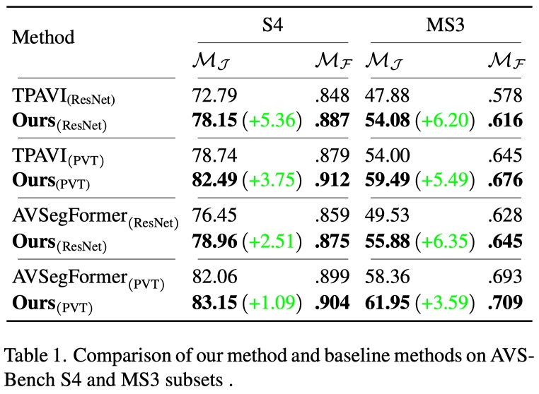
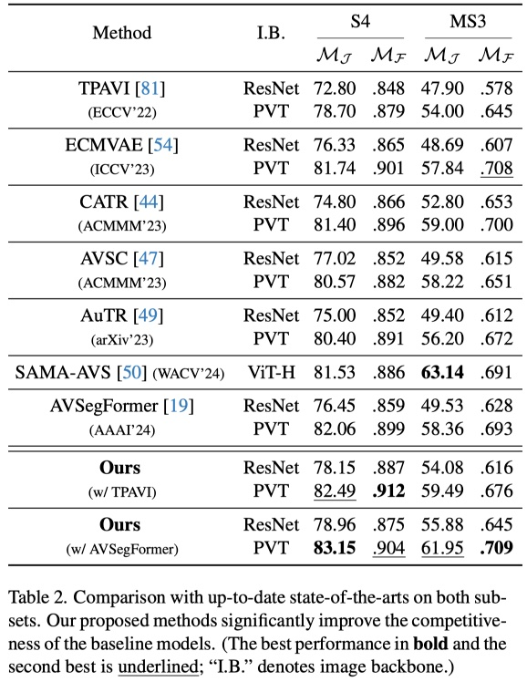
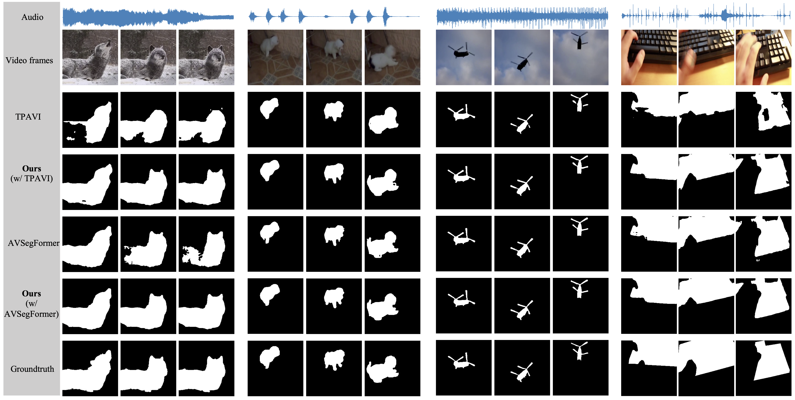
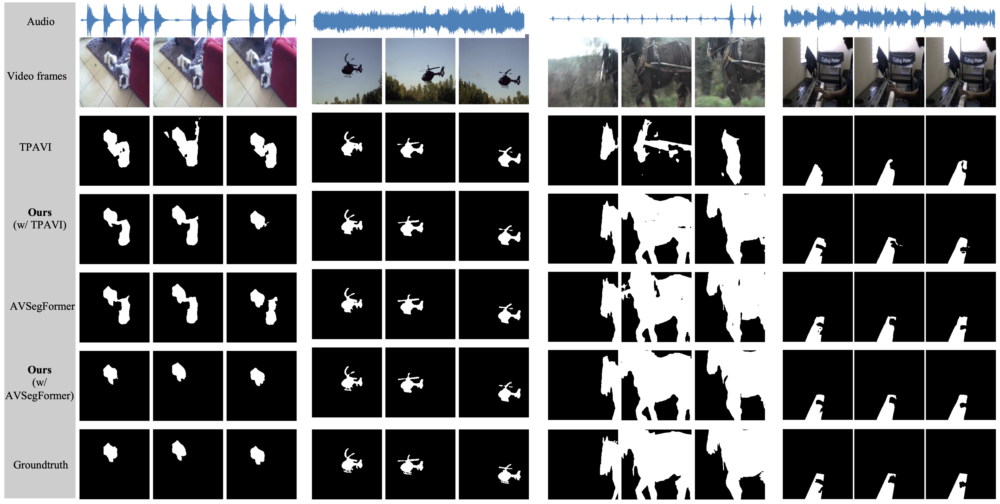

Audio-Visual Segmentation via Unlabeled Frame Exploitation
Abstract
Audio-visual segmentation (AVS) aims to segment the sounding objects in video frames. Although great progress has been witnessed, we experimentally reveal that current methods reach marginal performance gain within the use of the unlabeled frames, leading to the underutilization issue. To fully explore the potential of the unlabeled frames for AVS, we explicitly divide them into two categories based on their temporal characteristics, i.e., neighboring frame (NF) and distant frame (DF). NFs, temporally adjacent to the labeled frame, often contain rich motion information that assists in the accurate localization of sounding objects. Contrary to NFs, DFs have long temporal distances from the labeled frame, which share semantic-similar objects with appearance variations. Considering their unique characteristics, we propose a versatile framework that effectively leverages them to tackle AVS. Specifically, for NFs, we exploit the motion cues as the dynamic guidance to improve the objectness localization. Besides, we exploit the semantic cues in DFs by treating them as valid augmentations to the labeled frames, which are then used to enrich data diversity in a self-training manner. Extensive experimental results demonstrate the versatility and superiority of our method, unleashing the power of the abundant unlabeled frames.

Motivation
Mainstream methods for audio-visual segmentation (AVS) treat the labeled frames and unlabeled frames sampled from a video sequence equally and predict the masks for all frames. However, only the labeled frames have groundtruth supervision while the remaining abundant unlabeled frames have no supervision. And the only possible benefit which the unlabeled frames might provide for labeled frames is the contextual information with the global temporal modeling (GTM) operation. Concretely, global temporal modeling (GTM) employs cross-attention to model the temporal relationships of the features across all the frames from a video, including labeled and unlabeled ones. To illustrate, Zhou et al. deployed the cross-attention to integrate the space-time relations of the features in the TPAVI module in the audio-visual fusion stage; likewise, Gao et al. proposed the channel-attention mixer based on the cross-attention in the audio-visual fusion stage to obtain the mask features.
To measure the improvement by exploiting the unlabeled frames with GTM of the previous method including TPAVI and AVSegFormer, we establish the baseline by discarding the unlabeled frames and only using the labeled frames for model training. We perform experiments on AVSBench-S4 dataset and compare the performance with two typical methods TPAVI and AVSegFormer. The results on TPAVI baseline model are shown in the table, compared to the model trained with only labeled frames (w/o GTM), previous method such as TPAVI, based on global temporal modeling (w/ GTM) achieves only marginal performance gain: 0.14 gain with ResNet and 0.58 gain with PVT in mIoU. The results demonstrate the major issue of current methods: the underutilization of the unlabeled frames to boost the performance for the AVS task. Based on the observation, we intend to devise a more effective method to fully exploit the unlabeled frames for the AVS task.

Method
Based on the observation, we start by first dividing the unlabeled frames into two categories: neighboring frame (NF) and distant frame (DF), based on the temporal distance with the target labeled frame. Though the visual changes are very limited, NFs often contain rich dynamic motion information that is important to the audio-visual understanding. If properly used, the motion can not only assist in the accurate localization of the sounding objects but also provide the shape details of objects. For the DFs, both they and the labeled frame reflect the different stages of an audio-visual event. Contrary to the NFs, this long-term temporal relationship means that the DFs generally share the same or semantic-similar objects but with large appearance variations. Therefore, DFs could serve as the natural semantic augmentations for the labeled frames, which can be utilized to diversify the training data, thereby enhancing the model generalization capabilities.

Considering the characteristics of NFs and DFs, we propose a universal unlabeled frame exploitation (UFE) framework to leverage the two types of unlabeled frames with different strategies. For NFs, we extract the motion by calculating the optical flow between the target labeled frame and its NFs. And we explicitly feed the flow as model input to incorporate the motion guidance, which is complementary to the still RGB frame. In terms of DFs, since they are the natural semantic augmentations to labeled frames, the training data could be significantly enriched beyond the labeled frames. To this end, we propose a teacher-student network training framework to provide valid supervision for the unlabeled frames with the weak-to-strong consistency, where the predictions for the strong-augmented frames from the student are supervised by the predictions for the weakaugmented ones from the teacher.
Improvement over Baseline Methods
We perform experiments based on AVSBench S4 and MS3 datasets following previous works. To verify the effectiveness of our method, we choose two typical baseline methods: FCN-based TPAVI and transformer-based AVSegFormer, and we apply our framework onto the baseline methods. We compare the performance between the models (Ours) and the baseline models in Tab. 1. As Tab. 1 shows, our method consistently improves the performance significantly on both TPAVI and AVSegFormer, which indicates the effectiveness and universality of our method.

Comparison against Existing SOTAs
We also collect up-to-date AVS methods AVSC, CATR, AuTR, CMVAE, and SAMA-AVS; and we compare the performance of these methods with our proposed method. The results are shown in Tab. 2. The comparison shows the strong competitiveness of our proposed framework when compared with so various latest methods. Our method based on AVSegFormer is still the state-of-the-art method among all the methods. Moreover, on S4 subset, the original TPAVI method only has 72.8 MJ with ResNet, 78.7 MJ with PVT, which falls behind the other methods including AVSC, CATR, AuTR, ECMVAE. However, by combining our method with the TPAVI, the model (Ours w/TPAVI) has outperformed the other methods including AVSegFormer, AVSC, CATR, AuTR and ECMVAE in almost all metrics; and it becomes the second best model except our AVSegFormerbased model “ours w/ AVSegFormer” under the same backbones. The results clearly reveal the effectiveness of our versatile proposed framework. Notably, our framework can also be applied on these methods to further improve their performance.

Qualitative Results
We qualitatively show some segmentation results of our method and the baselines including TPAVI and AVSegFormer with AVSBench S4 and MS3 datasets.




Cite the Paper
If you use the dataset in your research, please use the following BibTeX entry. If you have any question, feel free to contact jinxliu#sjtu.edu.cn (replace # with @).
@article{liu2024audio,
title={Audio-Visual Segmentation via Unlabeled Frame Exploitation},
author={Liu, Jinxiang and Liu, Yikun and Zhang, Fei and Ju, Chen and Zhang, Ya and Wang, Yanfeng},
journal={arXiv preprint arXiv:2403.11074},
year={2024}
}